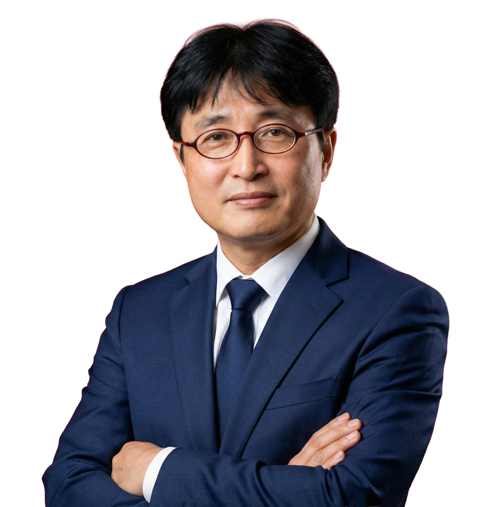

ABOUT KARAM
문제를 정확히 듣고,
해결의 기준을 만듭니다.
법률의 언어를 현장의 언어로 바꾸는 노무 파트너입니다.
REPRESENTATIVE LABOR ATTORNEY
기업 경영의 든든한
노무 파트너가 되겠습니다.
현장의 목소리를 깊이 이해하는 경험과 전문성을 바탕으로, 기업이 마주한 노동 문제의 현실적인 해법을 함께 찾습니다.
- 제8회 공인노무사 시험 합격
- 전 성남 공인노무사회 회장 · 현 고문
- 경기도지방노동위원회 지정 노무사
- KOTRA 외국인기업 노무상담 전문위원

REPRESENTATIVE LABOR ATTORNEY대표 공인노무사 김기호
KARAM IN NUMBERS
현장의 경험이
전문성이 되었습니다.
OUR PRINCIPLE
명료하게 듣고,
단단하게 돕습니다.
상담은 단순히 답을 전달하는 일이 아닙니다. 충분히 듣고, 필요한 사실을 정리하고, 선택할 수 있는 길을 보여드리는 과정입니다.